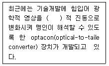
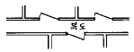
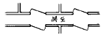
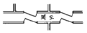
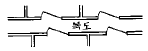
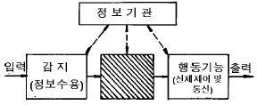

실내건축기사(구) (2003-03-16 기출문제)
1과목: 실내디자인론
1. 고객의 시선이 가장 편하게 머물고 손으로 잡기에도 가장 편안한 상품 진열높이는?
- 850 ∼ 1250 mm
- 450 ∼ 850 mm
- 1300 ∼ 1500 mm
- 1500 ∼ 1700 mm
(정답률: 84%)

2. 좋은 디자인을 판단하는 기준이 아닌 것은?
- 시대성의 반영
- 재료의 선택
- 기능성의 부여
- 디자인의 방법
(정답률: 57%)
3. 동선계획시 절대적으로 고려되어야 할 사항이 아닌 것은?
- 빈도
- 속도
- 방향
- 하중
(정답률: 46%)
4. 실내공간 구성요소중 벽(wall)의 기능에 대한 설명으로 올바른 것은?
- 실내공간을 형성하는 평면적 기초가 됨
- 공간의 형태와 크기를 수직적으로 결정함
- 건축의 구조와 관계가 전혀 없음
- 항상 천정과 접해 있음
(정답률: 68%)
5. 실내디자이너의 작업은 크게 3그룹으로 분류할 수 있는데 그 분류에 해당되지 않는 것은?
- interior designer
- furniture designer
- interior decorator
- craft designer
(정답률: 81%)
6. 공간치수에 관한 고려사항으로서 거리가 가장 먼 것은?
- 치수계획은 생활과 공간의 상호관계를 고려한 적정치수에 의한다.
- 환기량이나 향(向)을 결정할 때는 용적으로 바꾸어 생각하는 것이 좋다.
- 출입구의 경우는 주로 문턱의 높이가 출입행위를 규제한다.
- 복도의 치수는 통행자의 수와 보행속도에 영향을 미친다.
(정답률: 75%)
7. 실내의 공간을 실제보다 넓어 보이게 하는 방법에 속하지 않는 것은?
- 큰 가구를 벽에 부착시켜 배치하면 공간이 넓어 보인다.
- 차가운색 보다는 따뜻한 색으로 색채계획을 하면 넓어 보인다.
- 창이나 문 등의 개구부를 크게 하여 옥외공간과 시선이 연장되도록 하면 넓어 보인다.
- 가구의 종류와 수는 적을수록 공간이 넓어 보인다.
(정답률: 52%)
8. 주거공간에서 유틸리티공간(utility area)과 가장 밀접하게 연결되는 실은?
- 침실
- 거실
- 부엌
- 아동실
(정답률: 62%)
9. 천장, 벽, 보의 표면에 광원을 감추고, 일단 천장 등에서 반사한 간접광으로 조명하는 것으로, 실 전체에 부드러운 빛을 줄 수 있으나 효율이 나쁘고, 조도가 낮은 건축화조명의 방식은?
- 광천장조명
- 코브(cove)조명
- 캐노피(canopy)조명
- 코니스(cornice)조명
(정답률: 63%)
10. 주택의 기능별 공간계획이 바른 것은?
- 정적공간 - 침실, 서재, 거실
- 동적공간 - 식사실, 현관, 서재
- 생리적기능공간 - 침실, 식당, 욕실
- 정서적기능공간 - 거실, 서재, 작업실
(정답률: 60%)
11. 실내디자인의 체크 포인트로서 적당하지 않은 것은?
- 공간과 가구간의 치수 점검
- 공정표 및 공사용 도구점검
- 자재선정 및 치수 점검
- 현장 환경 점검
(정답률: 60%)
12. 형태지각의 특성으로 옳은 것은?
- 유사성이란 제반 시각요소들 중 형태의 경우만 서로 유사한 것들이 연관되어 보이는 경향을 말한다.
- 접근성이란 가까이 있는 시각요소들을 패턴이나 그룹으로 인지하게 되는 특성을 말한다.
- 폐쇄성이란 완전한 시각요소들을 불완전한 것으로 보게 되는 성향을 말한다.
- 도형과 배경의 법칙이란 양자가 동시에 도형이 되거나 동시에 배경이 될 수 있는 성향이다.
(정답률: 59%)
13. 시스템 디자인(system design)에 관한 설명으로 옳은 것은?
- 시스템가구는 형태적 측면에서 고려된 것으로 대량 생산과는 관계가 없다.
- 서비스코어시스템(service core system)은 가구나 조명 등 실내공간을 보조하는 시스템을 말하는 것이다.
- 디자인에서 시스템 적용은 모듈에 의한 표준화, 조립화와 연결된다.
- 시스템키친(system kitchen)은 주방용기인 그릇 등의 디자인을 통합하는 작업이다.
(정답률: 70%)
14. 배경과 실물의 종합전시에 적합한 전시방법은?
- 파노라마 전시
- 디오라마 전시
- 아일랜드 전시
- 하모니카 전시
(정답률: 62%)
15. 다음의 가구 중 소파의 종류가 아닌 것은?
- 체스터필드(chesterfield)
- 카우치(couch)
- 라운지(lounge)
- 오토만(ottoman)
(정답률: 54%)
16. 합리적인 디자인을 위해 균형을 고려하여야 할 사항이 아닌 것은?
- 디자이너의 희망과 고객의 요구사항
- 경제적인 것과 합리적인 것
- 이상적인 디자인과 실현 가능한 디자인
- 미적인 것과 기능적인 것
(정답률: 19%)
17. 디자인의 원리 중 리듬(rhythm)에 속하지 않는 것은?
- 반복
- 점이
- 대립
- 통일
(정답률: 58%)
18. 실내디자인 진행과정에서 조건설정의 요소로서 가장 거리가 먼 것은?
- 기존공간의 제한사항 및 주변환경
- 시공자의 이윤
- 고객의 요구사항
- 고객의 예산
(정답률: 76%)
19. 다음 주거공간에 대한 설명 중 옳은 것은?
- 전통 한옥의 공간구조는 남성과 여성의 생활공간이 분리되어 있다.
- 한식 침실이 양식 침실보다 가구의 점유면적이 크다.
- 한식 침실은 소박하고 안정되기 보다는 화려하고 복잡하다.
- 양식 침실이 한식 침실보다 용도면에 있어서 융통성이 크다.
(정답률: 84%)
20. 디자인은 기본적으로 점, 선, 면으로 구성되어 진다. 점에 관한 설명 중 맞는 것은?
- 기하학적인 정의로 크기가 없고 위치만 있다.
- 선의 굴절에서는 나타나지 않는다.
- 공간에 점이 위치할 때, 한점으로는 집중효과가 없다
- 점의 크기는 주변환경에 따라 절대적으로 지각된다.
(정답률: 59%)
2과목: 색채학
21. 다음 중 병치가법혼색의 응용과 관련 있는 것은?
- 유화 그림
- 도장 작업
- 칼라 TV
- 천의 염색
(정답률: 72%)
22. 문· 스펜서 색채조화론에서 미도(美度)는 일반적으로 얼마 이상이면 좋은가?
- 0.9
- 0.7
- 0.5
- 0.3
(정답률: 54%)
23. 다음 영. 헬름홀즈의 3원색설에 관한 설명 중 맞는 것은?
- 세가지 시세포가 망막에 분포하여 이 세포에 의하여 여러가지 색지각이 일어난다는 설이다.
- 반대색설이라고도 한다.
- 이화작용과 동화작용에 의해서 색감각이 이루어진다.
- 황색의 물체를 보았을 때 적색과 백색의 시세포가 흥분하여 황색으로 지각한다.
(정답률: 45%)
24. 다음 오스트발트 표색기호 중 가장 강한 색상 대비가 느껴지는 조화는?
- 4ie - 12ie
- 3ne - 21ne
- 1na - 21na
- 14na - 17na
(정답률: 35%)
25. 살색, 밤색은 어느 색명에 속하는가?
- 계통색명
- 관용색명
- 일반색명
- 기본색명
(정답률: 67%)
26. 아파트 건축물의 색채기획시 고려해야 할 사항이 아닌 것은?
- 개인적인 기호에 의하지 않고 객관성이 있어야 한다.
- 주변 환경과 관계없이 독특한 디자인으로 색채조절을 한다.
- 전체적으로 질서가 있어야 하며 적당한 변화가 있어야 한다.
- 주거민을 위한 편안한 디자인이 되어야 한다.
(정답률: 71%)
27. 다음 중 환경조건에 따른 색채계획이 가장 올바른 것은?
- 빛이 부족한 장소 : 명도가 낮은 색을 사용하여 자연광선의 부족을 보완해 준다.
- 비교적 고온의 작업 장소 : 붉은계열의 따뜻한 색을 주로 사용한다.
- 넓고 천정이 높은 장소 : 면의 분할이나 수퍼 그래픽등을 활용하여 쾌적한 분위기를 연출한다.
- 회색의 기계류가 많은 장소 : 무채색으로 모든 것을 통일하여 단조로움을 강조한다.
(정답률: 60%)
28. 다음 중 가장 무겁게 느껴지는 색은?
- 보라
- 초록
- 노랑
- 주황
(정답률: 70%)
29. 다음 색채 대비의 효과 중 노랑색이 가장 눈에 잘 띄는 배색은?
- 회색(N6) 배경위에 노랑
- 흰색 배경위에 노랑
- 파랑색 배경위에 노랑
- 주황색 배경위에 노랑
(정답률: 53%)
30. 가법혼색, 감법혼색, 중간혼색 등으로 분류 할 때, 이러한 분류 기준은 어떤 요소와 가장 관계가 있는가?
- 명도
- 색상
- 조도
- 보색
(정답률: 36%)
31. 잔상이 원래의 감각과 같은 밝기 및 색상을 가질 때 무엇이라 하는가?
- 컬러대비(color contrast)
- 동화현상(assimilation effect)
- 음성잔상(negative afterimage)
- 양성잔상(positive afterimage)
(정답률: 55%)
32. 안전을 위한 색채의 활용으로 옳은 것은?
- 빨강 : 귀중하고 값있는 물질
- 노랑 : 정지, 금지
- 녹색 : 비상구, 안전물질
- 파랑 : 주의, 운반차
(정답률: 56%)
33. 다음 중 일반색명에 관한 설명이 올바른 것은?
- 동물, 식물 등에서 따온 색명
- 광물이나 원료이름에서 따온 색명
- 자연이나 자연현상에서 따온 색명
- 색상, 명도, 채도를 나타내는 수식어를 붙인 색명
(정답률: 80%)
34. 빛이 사물에 닿으면 흡수, 반사, 투과정도에 따라 우리 눈에 지각된다. 모든 빛을 흡수하는 경우 물체는 어떤 색으로 보이는가?
- 회색
- 검정색
- 흰색
- 파란색
(정답률: 56%)
35. SD방법으로 제품의 색채 이미지를 조사하려고 한다. 단어의 이미지가 잘못 짝지어진 것은?
- 부드럽다 - 딱딱하다
- 따뜻하다 - 차갑다
- 동적이다 - 정적이다
- 화려하다 - 아름답다
(정답률: 78%)
36. 색채의 강약감은 색의 3속성 중 주로 무엇에 요인 되는가?
- 채도
- 명도
- 색상
- 배색
(정답률: 56%)
37. 색광을 표시하는 표색계로 심리적이고 물리적인 빛의 혼색 실험결과에 그 기초를 두는 것은?
- 현색계
- 지각색계
- 혼색계
- 물체색계
(정답률: 63%)
38. 색채 대비실험에서 빨강 색지를 보다가 흰 색지를 볼 때 나타나는 색현상은?
- 노랑 띤 색
- 자주 띤 색
- 청록 띤 색
- 보라 띤 색
(정답률: 47%)
39. 정성적(定性的) 색채조화론에서 공통되는 원리의 조합으로 올바른 것은?
- 질서성 - 친근성 - 동류성 - 명료성
- 질서성 - 자연성 - 동류성 - 상대성
- 주관성 - 동류성 - 비모호성 - 객관성
- 동류성 - 비모호성 - 자연성 - 합리성
(정답률: 60%)
40. 다음 색 중 색광의 3원색에 속하지 않는 것은?
- Red
- Blue
- Yellow
- Green
(정답률: 54%)
3과목: 인간공학
41. 물질의 분해, 합성과정의 부조화가 피로 현상을 일으키게 한다는 가정을 가진 학설은?
- 피로물질 축적설
- 에너지 소모설
- 물리화학적 변조설
- 중추설
(정답률: 31%)
42. 일반적으로 소음의 강도를 표시하는 단위는 dB이며 이는 실제로 무엇을 의미 하는가?
- dBA
- dBC
- dBF
- dBL
(정답률: 37%)
43. 조명 방법 중 간접조명에 대한 설명이 옳은 것은?
- 작업상 필요한 장소만 조명하는 방법이다.
- 광원을 천정에 매달기 때문에 파손의 위험이 적으나 전력소비량이 많다.
- 효율이 좋으나 음영이 생긴다.
- 광이 천정면이나 벽면에 부딪친 다음 반사된 광선이 조명면에 비치는 방법이다.
(정답률: 78%)
44. 다음 내용 중 괄호 안에 들어갈 용어는?

- 시각
- 촉각
- 통각
- 미각
(정답률: 68%)
45. 외기에 의해서 몸이 찬 기운을 느끼기 시작하는 온도는?
- 21℃
- 17℃
- 10℃
- 4℃
(정답률: 35%)
46. 다음 중 정신적 작업부하의 측정 척도의 내용으로 올바른 것은?
- 피측정자가 수용할 수 없는 측정척도도 가능하다.
- 시간 경과에 관계가 있는 척도여야 한다.
- 객관적일 뿐 아니라 주관적으로도 구별할 수 있는 척도이여야 한다.
- 다른 부하의 영향을 받는 척도이어야 한다.
(정답률: 52%)
47. 제어/반응비(control/response ratio) 에 대한 설명 중 잘못된 것은?
- 표시장치에 있어서 지침이 움직이는 총량에 대한 제어장치 움직임의 총량을 뜻한다.
- 민감도와 같은 의미이다.
- 민감한 제어일수록 제어/반응비가 높다.
- 제어/반응비가 감소함에 따라 이동시간은 급격히 감소하다가 안정되며, 조정시간은 이와 반대의 형태를 갖는다.
(정답률: 37%)
48. 문자와 도형의 정보처리과정의 특성이 아닌 것은?
- 가시성
- 명시성
- 감각성
- 가독성
(정답률: 66%)
49. EMG(electromyography)란 무엇을 측정하는 기구인가?
- 심장활동
- 두뇌활동
- 눈의 촛점이동
- 근육의 활동
(정답률: 57%)
50. 시각표시장치에서 시차(parallax)를 줄이는 방법으로 가장 올바른 것은?
- 지침을 다이얼면과 최소한으로 붙여야 한다.
- 숫자와 눈금을 같은 색으로 칠한다.
- 지침이 몇번이고 회전하는 계기는 0점을 꼭대기에 둔다.
- 가능한한 등거리 눈금을 사용한다.
(정답률: 46%)
51. 청각기관에 대한 일반적인 설명 중 틀린 것은?
- 귀는 외이, 중이, 내이로 구성되어 있다.
- 귀의 감도는 음의 주파수에 따라 다르다.
- 사람이 귀로 들을 수 있는 것은 20-20000Hz의 진동수범위이다.
- 평형 감각에 가장 중요한 역할을 담당하는 부분은 중 이 부분이다.
(정답률: 52%)
52. Weber의 법칙을 설명한 것 중 틀린 것은?
- 한계효용체감의 법칙과 동일한 의미이다.
- I을 기준자극, △I을 JND라 하면 △I/I=C(상수)로 일정하다.
- 인간이 지각하는 밝기의 증가는 조명의 강도와 선형적으로 비례한다.
- 기준자극이 커질수록 동일한 크기의 자극을 얻기 위해서는 더 강한 자극을 주어야 한다.
(정답률: 54%)
53. 다음 인간공학 분야 중 인체측정학(anthropometry)을 가장 많이 이용하는 분야는?
- 생체역학(biomechanics)
- 작업 생리학(work physiology)
- 인공두뇌학(cybernetics)
- 생체공학(bioengineering)
(정답률: 23%)
54. 사무실 설계에서 복도쪽의 출입문의 위치에 따라 어느 정도 소음을 줄일 수 있는데 가장 적합한 것은?




(정답률: 67%)
55. 흰 글자와 검은 글자의 최적 획폭비에 관한 것으로 틀린 것은?
- 글자의 색에 따라 최적 획폭비가 다른 것은 광삼현상 (irradiation)때문이다.
- 검은 바탕에 흰 글자의 획폭이 반대의 경우보다 가늘어야 한다.
- 흰 바탕에 검은 글자의 획폭이 반대의 경우보다 가늘어야 한다.
- 조도가 높을수록 흰 모양이 검은 배경으로 더욱 번지어 보인다.
(정답률: 39%)
56. 다음 중 열전도율이 가장 낮은 것은?
- 콘크리트
- 체지방
- 단열재
- 공기
(정답률: 44%)
57. 소리와 능률의 관계에 대한 내용 중 옳은 것은?
- 낮은 진동수의 소음은 높은 진동수의 소음보다 시끄럽다.
- 불규칙하게 변하는 소리는 사람을 안정되게 한다.
- 단순반복작업 일수록 소음에 대한 영향이 크다.
- 시각의 원근조정, 원근감, 암순응, 거리판정 등에서 소음은 영향받지 않는다.
(정답률: 29%)
58. 자동화된 인간-기계시스템에서의 인간의 역할은?
- 감시 및 보전
- 의사결정
- 동력원
- 조종의 실행
(정답률: 43%)
59. 조명에 관한 사항에서 빛나는 정도의 단위(brightness)는?
- 방사속
- 조도
- 대비
- 휘도
(정답률: 52%)
60. 다음 인간-기계체계의 그림 중 빗금친 부분에 해당하는 것을 컴퓨터 시스템에 비교할 때, 올바른 것은?

- 프린터(Printer)
- 중앙처리장치(CPU)
- 펀치카드(Punch card)
- 감지장치(Sensor)
(정답률: 67%)
4과목: 건축재료
61. 기본형 시멘트블록의 규격과 관련 없는 것은? (단, 단위 ㎜)
- 390 × 190 × 190
- 390 × 190 × 150
- 390 × 190 × 120
- 390 × 190 × 100
(정답률: 26%)
62. 목재의 강도와 관련성이 가장 적은 것은?
- 비중
- 함수율
- 수령
- 건조방법
(정답률: 17%)
63. 다음중 경량(輕量)콘크리트의 골재로서 슬래그(slag)를 사용하기 전에 물축임하는 이유로 가장 적당한 것은?
- 시멘트 모르타르(cement mortar)와의 접착력을 좋게하기 위해
- 유기 불순물이나 진흙을 씻어 내기 위해
- 콘크리트의 자체 무게를 줄이기 위해
- 시멘트가 수화하는데 필요한 수량을 확보하기 위해
(정답률: 41%)
64. 미장공사에 대한 설명으로 옳지 않은 것은?
- 돌로마이트플라스터는 소석회보다 점성이 낮아 풀이 필요하며 건조수축이 적은 특징이 있다.
- 회반죽 바름은 소석회를 사용한다.
- 회반죽 바름에 사용하는 해초풀은 채취 후 1∼2년 경과된 것이 좋다.
- 수경성 미장재료는 습기가 있는 장소에서의 시공에 유리하다.
(정답률: 34%)
65. 응결이 대단히 느리므로 명반을 촉진제로 배합한 것으로 약간 붉은 빛을 띤 백색을 나타내는 플라스터는?
- 혼합석고 플라스터
- 보드용 석고 플라스터
- 순석고 플라스터
- 경석고 플라스터
(정답률: 45%)
66. 석재에 대한 설명중 옳은 것은?
- 석재는 비중이 커서 가공성이 좋다.
- 화강암은 화열에 강하여 파괴되지 않는다.
- 석재는 일반적으로 인장강도가 강하여 장대재를 얻기가 쉽다.
- 종류가 다양하고 색도와 광택이 있어 외관이 장중 미려하다.
(정답률: 41%)
67. 테라코타에 대한 설명 중 부적당한 것은?
- 테라코타는 일반적으로 속이 빈 대형의 점토제품을 말한다.
- 돌보다 가볍지만 소성제품이므로 형상, 치수가 틀림이 생기기 쉽다.
- 구조용으로는 사용할 수 없다.
- 원료토는 주로 석기질 점토나 상당히 철분이 많은 점토를 사용한다.
(정답률: 27%)
68. 알루미늄 창호를 강제 창호와 비교 설명한 것중 틀린 것은?
- 내화성이 약하다.
- 열팽창이 작다.
- 내알카리성이 약하다.
- 압연, 인발 등의 가공성이 우수하다.
(정답률: 27%)
69. 열가소성 수지의 일종인 폴리에틸렌수지의 특징이 아닌 것은?
- 얇은 시트나 내화학성의 파이프로 이용된다.
- 내약품성, 전기절연성이 대단히 좋다.
- 내수성이 좋지 않다.
- 도장 재료로서 사용은 적당하지 않다.
(정답률: 58%)
70. 미장재료 중 기경성에 해당되는 것은?
- 돌로마이트플라스터
- 시멘트모르타르
- 석고플라스터
- 시멘트리신
(정답률: 54%)
71. 보통벽돌로서 표준형의 규격으로 옳은 것은?
- 190 × 90 × 60mm
- 210 × 100 × 60mm
- 190 × 90 × 57mm
- 210 × 100 × 57mm
(정답률: 54%)
72. 목재의 열적 성질에 관한 설명 중 옳지 않은 것은?
- 겉보기비중이 작은 목재일수록 열전도율은 작다.
- 목재는 불에 타는 단점이 있으나 열전도율이 낮아 여러 가지 용도로 사용되고 있다.
- 가벼운 목재일수록 착화되기 쉽다.
- 열전도율은 섬유방향이 이것에 직각인 방향보다 작다
(정답률: 27%)
73. 다음은 플라이애시에 대한 설명이다 틀린 것은?
- 콘크리트의 워커빌리티를 좋게하고 사용 수량을 감소 시킨다.
- 초기 재령의 강도는 다소 작으나 장기 재령의 강도는 상당히 크다.
- 시멘트의 수화열에 의한 균열 발생을 억제한다.
- 건조 수축이 다소 심하므로 매스콘크리트에 사용은 피한다.
(정답률: 46%)
74. 보통 판유리의 일반적 성질에 대한 기술 중 옳지 않은 것은?
- 비중은 2.5정도이다.
- 보통 판유리의 강도는 인장강도를 말한다.
- 열전도율이 콘크리트보다 작다.
- 연화점은 720℃~30℃ 정도이다.
(정답률: 60%)
75. 강화플라스틱(FRP)의 재료로서 전기절연성, 내열성, 내약품성이 뛰어나며 레진콘크리트용 수지, 도료, 접착제 등에 사용되는 수지는?
- 알키드수지
- 실리콘수지
- 폴리에스테르수지
- 요소수지
(정답률: 42%)
76. 콘크리트의 건조 수축에 관한 기술로서 틀린 것은?
- 시멘트의 조성분에 의해 수축이 다르다.
- 시멘트량의 다소에 따라 일반적으로 수축량이 다르다.
- 된비빔일수록 수축량이 크다.
- 골재의 탄성계수가 크고 경질인 만큼 작아진다.
(정답률: 61%)
77. 구조체 균열에 충진하는 접착제는?
- 열경화성수지 접착제
- 열가소성수지 접착제
- 고무계접착제
- 천연계접착제
(정답률: 41%)
78. 목재에 관한 기술 중 틀린 것은?
- 가력방향이 섬유에 평행할 경우 압축강도가 인장강도 보다 크다.
- 함수율이 섬유포화점 이상에서는 함수율이 변해도 강도의 변화는 거의 없다.
- 목재는 비강도가 큰 재료이다.
- 부재의 규격화 및 공업화가 가능하다.
(정답률: 39%)
79. 멜라민수지 접착제의 설명 중 부적당한 것은?
- 내수성이 크다.
- 순백색 또는 투명백색이다.
- 멜라민과 포르말린으로 제조된다.
- 유리접착에 적당하다.
(정답률: 65%)
80. 상온에서 인장강도가 3600kg/cm2인 강재가 500℃로 가열 되었을 때 강재의 인장강도는 얼마 정도인가?
- 약 1200 kg/cm2
- 약 1800 kg/cm2
- 약 2400 kg/cm2
- 약 3600 kg/cm2
(정답률: 43%)
5과목: 건축일반
81. 근대 건축가인 루이스 칸(Louis I. Kahn)의 작품은?
- 롱샹(Ronchams) 교회당
- 시그램(Seagram) 빌딩
- 리차드 의학연구소(Richards Medical Research Laboratories)
- 웨인 라이트 빌딩(The Wain Wright Building)
(정답률: 30%)
82. 기숙사 침실의 간막이 벽을 설치할때 그 구조 규정에 적합치 않은 것은?
- 두께 8㎝의 철근콘크리트조
- 두께 10㎝의 무근콘크리트조
- 두께 19㎝의 콘크리트블록조
- 두께 19㎝의 벽돌조
(정답률: 33%)
83. 공연장의 각층 관람석의 출구 설치기준 중 틀린 것은? (단, 문화 및 집회시설의 용도임)
- 바닥면적이 300m2 이상 일때 적용한다.
- 출구는 관람석별로 2개소이상 설치한다.
- 각 출구의 유효너비는 1.2m이상이다.
- 관람석 밖으로의 출구의 문은 안여닫이로 할 수 없다
(정답률: 34%)
84. 보강블록조에서 내력벽의 벽량은 얼마 이상으로 하는가?
- 15 cm/m2
- 20 cm/m2
- 25 cm/m2
- 30 cm/m2
(정답률: 38%)
85. 지붕물매에 대한 설명 중 옳은 것은?
- 10cm 물매를 된물매라 한다.
- 5cm 물매는 5/10 경사와 같다.
- 물매는 수평거리 10cm에 대한 정삼각형의 수직높이를 말한다.
- 기와잇기일 때의 물매는 2.0∼3.5cm정도이다.
(정답률: 21%)
86. 바우하우스 디자인의 특성이 아닌 것은?
- 통일된 예술작업의 추진과 제품의 균질성 추구
- 인간적인 감각을 중시
- 혁신적인 재료사용
- 기계특성에 맞는 수평과 수직의 직선적 구성
(정답률: 26%)
87. 조립식 구조물에 관한 기술 중 틀린 것은?
- 공장관리에 의해 생산되므로 품질이 향상될 수 있다.
- 대부분의 작업을 공업력에 의존하므로 건축공사비가 상승된다.
- 현장작업이 간편하고 건식공법이 주가 된다.
- 기계화시공으로 대량생산을 할 수 있고 공사 기일이 단축될 수 있다.
(정답률: 65%)
88. 건축가와 설계이론이 맞게 연결된 것은?
- 미스 반 데어로헤 - 보편적 공간
- 루이스 설리번 - 메타볼리즘
- 프랭크 로이드 라이트 - 르 모듈러
- 로버트 벤츄리 - 규격화
(정답률: 42%)
89. 건축법상 내화구조의 규정에 적합하지 않은 것은?
- 철근콘크리트조의 모든 기둥
- 철골철근콘크리트조의 모든 보
- 철재로 보강된 유리블록의 지붕
- 철골조의 계단
(정답률: 21%)
90. 계단의 설치에 관한 규정으로 옳지 않은 것은?
- 높이 3m를 넘는 계단은 높이 3m 이내마다 너비 1.2m이상의 계단참을 설치해야 한다.
- 계단에 난간을 설치해야 하는 경우는 계단 높이가 최소 2m 이상인 경우이다.
- 너비 3m를 넘는 계단(계단의 단높이 15cm 이하이고 단너비 30cm 이상인 것은 예외)에는 계단의 중간에 너비 3m 이내마다 중간난간을 설치해야 한다.
- 계단에 대체하여 설치하는 경사로의 경사도는 1:8 을 넘지 않아야 한다.
(정답률: 43%)
91. 목재 마루널을 깔때 못머리가 감추어지고 진동으로 인해 못이 솟아 올라오는 일도 없는 가장 좋은 마루널 쪽매방법은?
- 제혀쪽매
- 빗쪽매
- 반턱쪽매
- 오니쪽매
(정답률: 55%)
92. 한국건축의 창호와 벽체에 대한 설명 중 틀린 것은?
- 벽체의 양식은 심벽구조로 되어 있다.
- 벽체는 단순하지만 창호는 다양하여 공간 정서에 변화를 준다.
- 한국 창호의 특징은 기계적이고 날카롭다.
- 정면은 대부분 창호로, 측면과 배면은 대체로 벽체로 구성하고 있다.
(정답률: 61%)
93. 소방법상 소방시설에 해당되지 아니하는 것은?
- 연결송수관 설비
- 비상용 승강기
- 무선통신 보조설비
- 비상조명등
(정답률: 38%)
94. 철근콘크리트구조에서 철근의 피복두께가 가장 커야 할곳은?
- 벽
- 기둥
- 보
- 기초
(정답률: 34%)
95. 비잔틴성당의 실내에 나타난 형식이 아닌 것은?
- 모자이크
- 부주두(dosseret)
- 펜덴티브(pendentive)
- 첨두아치(pointed arch)
(정답률: 36%)
96. 넓은 판유리 제작 기술을 이용하여 실내 중앙에 거대한 거울의 방(Galerie de Glasse)을 만들어 놓은 바로크 양식의 프랑스 건축물은?
- 밀라노 대성당
- 미카엘 대수도원
- 베르사이유 궁전
- 노틀담 성당
(정답률: 52%)
97. 일반건축물의 거실 반자 높이는 얼마 이상이어야 하는가?
- 2.1m
- 2.3m
- 2.6m
- 2.7m
(정답률: 55%)
98. 건축물에 설치하는 커텐 및 실내장식물 등에 대하여 소방법상 방염성능 검사를 받지 않아도 되는 곳은?
- 안마시술소
- 전시장
- 고층아파트
- 종합병원
(정답률: 47%)
99. 벽돌조의 내력벽의 두께는 벽높이의 얼마 이상으로 해야하는가?
- 1/12
- 1/16
- 1/20
- 1/25
(정답률: 25%)
100. 플랫슬랩(무량판) 구조의 특성에 대한 설명 중 옳지 않은 것은?
- 실내 이용율이 높다.
- 층높이를 낮게 할 수 있다.
- 고층건물에 유리한 구조이다.
- 바닥판이 두꺼워져 고정하중이 증가한다.
(정답률: 53%)
6과목: 건축환경
101. 바닥충격음에 대한 차음대책으로 적절하지 않은 것은?
- 철근콘크리트 슬래브 아래에 단열층을 설치한다.
- 뜬바닥 구조를 활용한다.
- 철근콘크리트 슬래브의 중량을 증가시킨다.
- 천장반자 시공에 의한 이중천장을 설치한다.
(정답률: 29%)
102. 자연환기에 대한 설명이다.틀린 것은?
- 환기회수란 실내면적을 소요공기량으로 나눈 값이다.
- 실내온도가 실외온도보다 낮으면 상부에서는 실외 공기가 유입되고 하부에서는 실내공기가 유출된다.
- 최근의 고단열, 고기밀 건축물은 열효율면에서는 유리하나 자연 환기에서는 불리하다.
- 실내에 바람이 없을 때 실내외의 온도차가 클수록 환기량은 많아진다.
(정답률: 18%)
103. 다음의 시각환경에 관련된 설명중에서 틀린 것은?
- 명순응은 암순응에 비해 보다 급격히 일어난다.
- 추상체는 밝은 곳에서 간상체는 어두운 곳에서 기능을 잘 발휘한다.
- 가시도는 물체크기, 휘도레벨, 보는시간, 조도레벨이 증가할수록 향상된다.
- 시각휘도가 낮아질때 스펙트럼의 청색부에 대한 비시감도가 적색부에 비해 감소한다.
(정답률: 40%)
104. 공조조닝에 관한 설명으로서 가장 옳지 않은 것은?
- 온습도의 조절이 가능하다.
- 백화점의 경우는 방위별에 따라 조닝을 하는 것이 일반적이다.
- 가능한한 조닝의 구획수를 억제하여야 한다.
- 방위별 조닝의 경우 외주 존의 영역은 건물 외주로 부터 6m 이내로 한다.
(정답률: 26%)
1⑤. 실내환경에서 시작업시 눈의 피로를 야기시킬 수 있는 환경요인으로 관련이 적은 것은?
- 현휘발생시
- 주광을 직접받지 않는 작업대
- 연색성의 존재
- 실내의 그림자
(정답률: 41%)
106. 결로와 관련하여 설명한 내용으로 옳지 않은 것은?
- 더운공기는 찬공기보다 더 많은 수증기를 포함할 수 있다.
- 공기중에 수증기가 추가될 경우 공기가 동시에 더워지면 결로는 전혀 발생하지 않는다.
- 표면결로는 구조체의 표면에 발생하는 결로를 말한다.
- 내부결로는 구조체의 내부에 발생하는 결로를 말한다.
(정답률: 64%)
107. 계단 등에 사용되며 위,아래 어느 쪽에서도 점멸 가능한 스위치는?
- 로터리 스위치
- 3로 스위치
- 풀 스위치
- 캐노피 스위치
(정답률: 53%)
108. 공조방식의 특징중에서 맞는 것은?
- 단일덕트 방식은 덕트스페이스가 비교적 크게 된다.
- 이중덕트 방식은 존마다 조화기, 급기덕트를 별개로 하여야 한다.
- 팬코일 유니트방식은 개별제어에 부적합하다.
- 인덕션 유니트방식은 외기송풍량을 크게 할 수 있다.
(정답률: 29%)
109. 실내 혹은 재료 등의 음향적 성질을 표시할 때 표준음으로 사용되는 주파수는 몇 cycle인가?
- 128
- 512
- 1000
- 2048
(정답률: 40%)
110. 자연환기량에 대한 설명 중 틀린 것은?
- 실내의 온도차가 심하면 환기량이 증가한다.
- 실내의 압력차가 심하면 환기량이 증가한다.
- 개구부가 병렬로 설치될 경우 압력차가 심하면 환기량이 증가한다.
- 개구부가 직렬로 설치되는 경우 두 개구부 면적의 차이가 심하면 환기량이 증가한다.
(정답률: 43%)
111. 열복사에 관한 기술 중 옳지 않은 것은?
- 어떤 물체의 복사에너지 방출량은 표면 절대온도의 2승에 비례한다.
- 복사에너지의 계산은 스테판, 볼츠만법칙을 이용한다.
- 일반 건축재료의 복사율은 0.9 정도이다.
- 물체의 흡수율과 복사율은 동일하다.
(정답률: 18%)
112. 다음과 같은 조건을 가진 강의실의 잔향시간으로 맞는 것은? (단, 강의실 크기 : 10 × 18 × 4.5M(가로 × 세로 ×높이) 500㎐에서의 흡음률 : 벽 0.3, 천장 0.04, 바닥 0.1)
- 1.03초
- 1.29초
- 1.34초
- 1.62초
(정답률: 38%)
113. 실내 환기발생 원리로서 설명이 잘못된 것은?
- 온도차에 의한 실내외 압력차는 공기 비중량의 차에 비례한다.
- 실의 하부에 개구부와 틈이 많으면 중성대는 위로 이동한다.
- 온도차에 의한 환기량은 유효개구부 면적에 비례한다.
- 실내외 압력차는 풍속의 제곱에 비례한다.
(정답률: 31%)
114. 다음의 공간들 중에서 가장 높은 주광율을 필요로 하는 것은?
- 병원의 수술실
- 회의실
- 독서실
- 미술관의 전시실
(정답률: 53%)
115. 색환경에 관한 설명으로 적합하지 않은 것은?
- 색채를 수량적으로 표현한 것을 표색이라고 한다.
- 색상은 색의 파장이 긴 것부터 짧은 순으로 10분할하고 다시 분할하여 전체를 100-40으로 구분한다.
- 채도는 색의 선명도를 말하며 중심축을 0 으로 하고 선명도가 증가할수록 중심축에서 멀어지며 수치는 작아진다.
- 명도는 색의 밝기를 말하며 백(10), 흑(0)으로 하여 그사이를 10등분한 것으로 이는 반사율로 환산할 수있다.
(정답률: 48%)
116. 용어의 단위가 옳은 것은?
- 열관류율 - kcal/m2h℃
- 열전도율 - kcal/mh
- 음의 세기- dB
- 비열 - kcal/kg
(정답률: 15%)
117. 잔향시간의 정의로서 맞게 서술된 것은?
- 음에너지가 1/100만 로 감소될 때 까지의 시간
- 음에너지가 1/200만 로 감소될 때 까지의 시간
- 음에너지가 30dB 감소될 때 까지의 시간
- 음에너지가 100dB 감소될 때 까지의 시간
(정답률: 41%)
118. 사막과 같은 고온건조 기후조건에 적용된 건축계획의 요점에 해당되지 않는 것은?
- 지붕 및 외벽의 색채는 가능한 밝은 것이 좋다.
- 건물의 배치는 밀집시키는 것이 좋다.
- 외벽의 벽체는 축열벽 구조로 하는 것이 좋다.
- 외벽의 개구부는 가능한 넓게 뚫는 것이 좋다.
(정답률: 34%)
119. 질량이 0.5kg이고, 비열이 4.2KJ/kg℃인 물을 15℃에서 80℃로 올리는데 필요한 열량은?
- 31.5KJ
- 136.5KJ
- 168.0KJ
- 2⑤.5KJ
(정답률: 50%)
120. 최적잔향시간은 실의 용도와 용적에 따라 다르다. 다음에서 최적잔향시간이 가장 짧은 것이 요구되는 실은?
- 교회음악실
- 강연장
- 영화관
- 학교강당
(정답률: 58%)